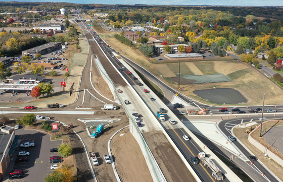
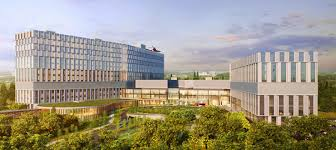
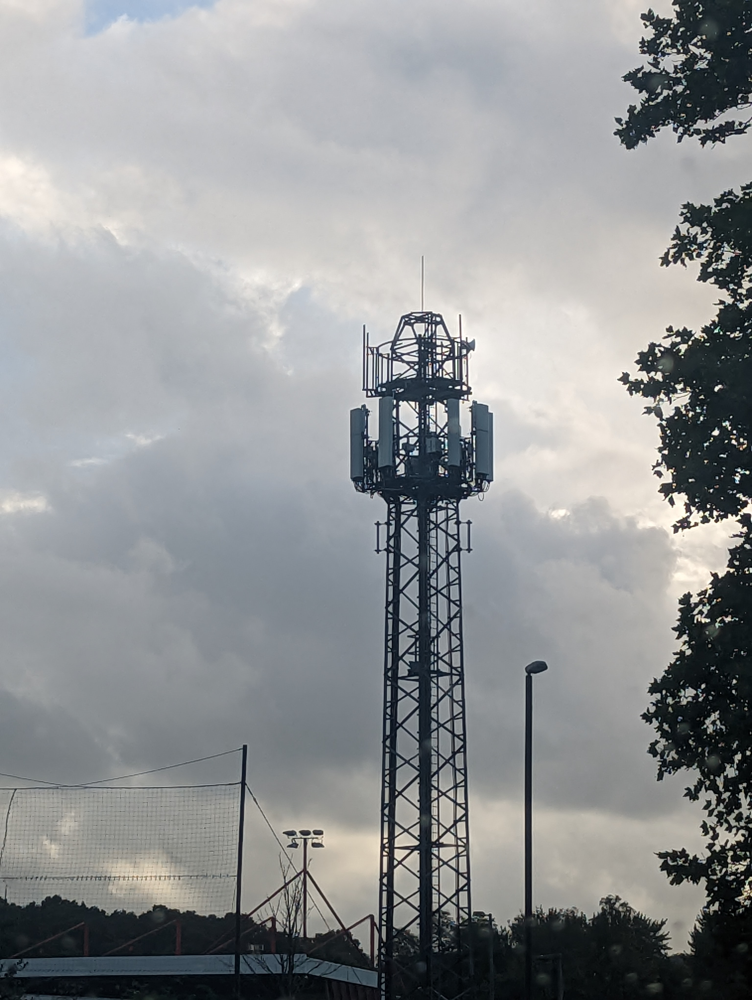

20+ Years
Structural design, assessment, rehabilitation, technical review and research.
More than 20 years of experience in structural design, assessment, rehabilitation, technical review, construction support and applied research across Canada and Bangladesh.
Design, assessment, rehabilitation, advanced structural analysis and applied research across transportation, buildings and specialized infrastructure.
Structural design, assessment, rehabilitation, technical review and research.
Design · Assessment · Rehabilitation · Load evaluation · Construction support.
Response spectrum · Nonlinear analysis · Dynamic response · Performance evaluation.
Wind-load analysis · Wind-tunnel experiments · Aeroelastic hybrid simulation.
High-rise · Healthcare · Institutional · Industrial · Rehabilitation.
Nuclear-related structures · Communication towers · Utility infrastructure.
Each sector links to the detailed project portfolio.

Bridges, highways, interchanges, culverts and flyovers.
Explore projects →
High-rise, residential, institutional and commercial structures.
Explore projects →
Hospitals, medical facilities and academic healthcare buildings.
Explore projects →
Existing structures, strengthening, retrofit and condition-driven engineering.
Explore projects →
Communication towers, industrial and nuclear-related structural systems.
Explore projects →
Wind engineering, hybrid simulation and advanced structural analysis.
Explore research →Every structure tells a story.
Successful structural engineering begins with understanding how a structure behaves—not simply how it is designed. My approach combines engineering fundamentals, analytical rigor, field observation, constructability and practical construction knowledge to deliver safe, durable and efficient structural solutions.